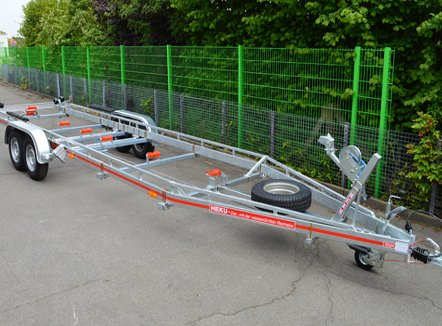

Ein gebrauchter Bootsanhänger kann eine gute Wahl sein, wenn Fahrgestell, Radlager und Papiere in Ordnung sind. HEKU baut nur neue Anhänger. Diese Seite ist eine Checkliste, kein Gebrauchtangebot.

Viele Mängel sieht man erst auf den zweiten Blick, vor allem bei Trailern, die oft im Salzwasser geslippt wurden. Diese Checkliste zeigt Ihnen, was Sie bei der Besichtigung prüfen, welche Unterlagen dazugehören und wann sich ein Umbau oder ein neuer Anhänger mehr lohnt. Die Kaufberatung für einen neuen Anhänger steht im Ratgeber Kaufberatung.
Bevor Sie über den Zustand sprechen, klären Sie die Eckdaten. Ein günstiger Trailer, der nicht zum Boot passt, wird später teuer.
Sehen Sie sich den Rahmen von unten an, vor allem Schweißnähte, Achsaufnahme und Deichsel. Rost an verzinkten Teilen zeigt sich oft als weiße oder braune Stellen. Risse, verbogene Träger oder nachträglich angeschweißte Teile ohne Nachweis sind ein Grund, genauer nachzufragen.
Bocken Sie den Anhänger auf, drehen Sie die Räder von Hand und rütteln Sie oben und unten am Rad. Mahlende Geräusche oder spürbares Spiel deuten auf ein verschlissenes Lager hin. Bei Trailern, die oft geslippt wurden, ist das eine der häufigsten Schwachstellen, weil Wasser ins Lager gelangen kann. Wie das passiert, erklärt die Seite Wasserdichte Radnabe.
Lässt sich die Zugstange der Auflaufeinrichtung leicht einschieben und federt sie zurück? Funktionieren Handbremse und Rückfahrautomatik? Prüfen Sie Bremsseile und Abreißseil auf Rost und Knicke. Eine Bremse, die lange im Wasser war und danach stand, kann festsitzen.
Das Herstellungsdatum steht als vierstellige DOT-Nummer auf der Reifenflanke (Woche und Jahr). Prüfen Sie Risse an der Flanke und Standplatten. Für Tempo 100 müssen die Reifen jünger als sechs Jahre sein und mindestens den Geschwindigkeitsindex L haben, siehe 100-km/h-Regelung. Viele Bootstrailer stehen lange, deshalb sind alte Reifen mit gutem Profil häufig.
Winde und Gurt bzw. Seil auf Verschleiß prüfen, Kiel- und Stützrollen auf Risse und festen Sitz, Auflagen auf mürbes Material. Diese Teile sind Verschleißteile und lassen sich meist tauschen. Passende Winden und Windenstände finden Sie unter Windenstände und Winden.
Schließen Sie den Anhänger an ein Zugfahrzeug an und testen Sie alle Funktionen. Korrodierte Kontakte sind bei Bootstrailern häufig. Die Belegung von 7- und 13-poligen Steckern finden Sie unter Technik und Steckerbelegung.
Kupplung auf Spiel und Verschleißanzeige prüfen, Stützrad auf Leichtgängigkeit und festen Sitz.
HEKU baut nur neue Anhänger. Für ältere HEKU-Anhänger hilft Ihnen HEKU aber direkt aus Bielefeld weiter:
Ein gebrauchter Trailer lohnt sich, wenn er zum Boot passt und Rahmen, Lager und Bremse in Ordnung sind. Kommen neue Reifen, neue Lager, eine Bremsenüberholung und neue Auflagen zusammen, kann ein neuer Anhänger die bessere Rechnung sein.
Neue HEKU-Bootsanhänger gibt es ungebremst ab 1.375 € (B 350) bis zu gebremsten Tandems bis 3.500 kg. Jeder wird auf das Boot abgestimmt und hat serienmäßig die eigenentwickelte wasserdichte und wartungsfreie Radnabe, deren Wirksamkeit Prof. Dr.-Ing. Kieper an der TH Hannover geprüft hat. Jedes Modell lässt sich für ein Motorboot oder ein Segelboot ausrüsten. Einen Überblick gibt die Produktübersicht Bootstrailer, das Wunschmodell stellen Sie im Konfigurator zusammen.
Worauf sollte ich beim Kauf eines gebrauchten Bootsanhängers zuerst achten?
Zuerst darauf, ob Zuladung, Länge und Auflagen zu Ihrem Boot passen. Danach prüfen Sie Rahmen, Radlager, Bremse, Reifen und die Papiere.
Wie erkenne ich verschlissene Radlager?
Bocken Sie den Anhänger auf und drehen Sie das Rad von Hand. Mahlende Geräusche oder Spiel beim Rütteln oben und unten am Rad sprechen für ein verschlissenes Lager.
Wie alt dürfen die Reifen sein?
Für Tempo 100 müssen die Reifen jünger als sechs Jahre sein und mindestens den Geschwindigkeitsindex L haben. Das Herstellungsdatum steht als DOT-Nummer auf der Reifenflanke.
Welche Papiere brauche ich beim Kauf?
Lassen Sie sich die Zulassungsbescheinigung Teil I und Teil II geben und prüfen Sie, ob die Angaben zum Typschild passen. Welche Unterlagen Sie für die Ummeldung brauchen, fragen Sie am besten bei Ihrer Zulassungsstelle nach.
Verkauft HEKU gebrauchte Anhänger?
Nein. HEKU baut nur neue Anhänger. Für ältere HEKU-Anhänger bietet HEKU Ersatzteile sowie Umbau und Nachrüstung an.
Bekomme ich für einen alten HEKU-Anhänger noch Ersatzteile?
Viele Teile gibt es im HEKU-Shop. Rahmenteile, Achskomponenten, Radnaben und Sonderbauteile für ältere Modelle sind auf Anfrage erhältlich. Halten Sie Modell, Artikelnummer und Fotos bereit.